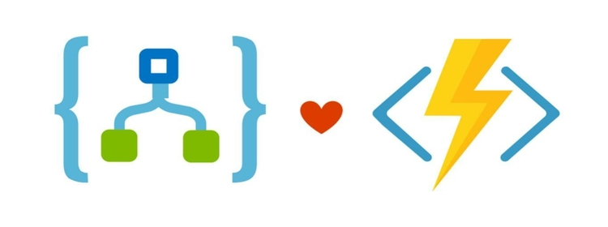

What is difference between Azure Durable Function & Logic App 21st July 2021

We have already discussed a quite a bit about Azure Durable
Functions. I did write up on bit of history and why we need Azure
Durable functions. You can read that article here..link below
Why do we need Azure Durable Functions and its history
I also wrote about
what are azure durable functions
And then if you are keen to know about various application
patterns available and that can benefit from Azure Durable
function then read my article
Patterns and Best Practises:Azure Durable Functions
Microsoft's Azure has two great tools for creating a workflow. One is Azure Logic Apps and other is Azure Functions. Until recently, one could argue that Azure Functions were code triggered by events while Logic Apps were event-triggered workflows. However, after the release of Azure Durable Functions, things changed. Azure Durable Functions, a cloud implementation of the durable task framework, offers you a way to define a workflow using code and therefore I guess developers love it more since it offers more control to developers.Durable Functions is an extension of Azure Functions that allows you to add statefullness to otherwise stateless serverless applications. On the other hand,with Azure Logic Apps you can create stateful and serverless workflows through a visual designer and there is no need to write any code. If you are architecting a solution and you have to choose one of these two options, you might be wondering how to choose between Azure Durable Functions and Logic Apps. This blog of mine,tries to solve exactly that by comparing both platforms and therefore shedding some light that may help you better choose a platform that fits your needs
| Solution | Azure Durable Functions | Logic Apps |
|---|---|---|
| Summary | Azure Functions is a serverless compute service that lets you run event-triggered code without having to explicitly provision or manage infrastructure. You can build Azure Functions in various languages like C#, F#, Node.js & Typescript, Python, Java and Powershell. | Azure Logic Apps is a cloud service that helps you schedule, automate, and orchestrate tasks, business processes, and workflows when you need to integrate apps, data, systems, and services across enterprises or organizations. |
| Development |
Code First (imperative) Since it is code first developers love it more |
“Designer-First” (declarative) experience |
| Connectivity & Actions |
About a dozen built-in binding types(mainly for other Azure
services). You can write custom code to create bindings as per your need (If there isn’t an existing binding available already). There is lightweight but limited configuration available within the Azure Portal. Unlike Logic Apps there is no visual workflow designer available. Azure Functions do not have connectors. It relies on triggers and input and output bindings – like Event Hubs, Service Bus, Cosmos DB and Storage. Bindings in Azure Functions provide a way to connect to data with code declaratively. List of bindings are very much limited when you compare with Logic Apps |
|
| Execution Context | Can run locally, on any self managed server, in containers or in Azure (serverless). | Runs only in Azure |
| Development Experience |
Code being triggered by an event Can be developed and debugged on local workstation, which is a big plus to increase developer productivity |
Worfklow triggered by an event Cannot debug ,test or run run Logic Apps locally, as it runs only in cloud and has a depdency on Microsoft-managed connectors(mixed) |
| Monitoring | Done through Azure Application Insights . Its little tough to manage/monitor for non-technical users | Azure portal, Azure Monitor logs. Much easier for non-technical users to manage as .Each run can be monitored within the Azure portal (mixed) |
| Deployment |
Like mentioned above, Azure functions are code first.
|
Logic apps can be created & updated directly in the azure portal. What it also means is that it will create a JSON template. This JSON template can also be deployed via Az DevOps and Visual Studio (Mixed) |
| Exception Handling | Since it is code driven, you need to build your own exceptional handling. For eg, say you want to handle a scenario where your application falls over when trying to connect to third party system, then you should create the logic yourself. There are no retry, resume or resubmit capabilities, unless ofcourse your develop them yourself using standard try-catch .With Azure Functions you do not have the out-of-the-box retry capability like Logic Apps except for Azure Queue and Blob Storage | Provide out of the box functionality with retries,scopes and run after configuration. Incase you still have issues, you can solve the problem by reviewing it in the azure portal, looking for a workflow that gets a failed status and then you can easily resubmit it. |
| Details | Azure Documentation link for Azure functions on pricing | Azure Documentation link for Logic Apps on pricing |
Conclusion.
To conclude,I hope you would have got a better understanding on
which platform to select when given a choice to architect your
application. The platform better suited really depends on the
functional and non-functional requirements and also on your
preferences.The choice between the two is on how much control you
need and how complex is your target solution.As a wrap up,we could
say that
Use Logic apps when:
1.
For fast and codeless services integrations. Use it for high-load and performance sensitive tasks.Since there are extensive list of connectors,time-to-market may be shortened2.
If it's ok to just run on Azure3.
Less coding is preferred.It has a visual designer4.
Visual tools to manage and troubleshoot workflows are requiredUse Azure Durable functions when:
1.
Provides an excellent out-of-the-box solution for various scenarios that cannot be held by Azure FaaS service alone.2.
The list of available bindings is sufficient to meet the requirements,3.
You prefer to have all the power and flexibility of a robust programming language.Email me at "techspacedeck@gmail.com" incase you have queries. Alternatively, you can fill the "CONTACT" form or drop a comment below